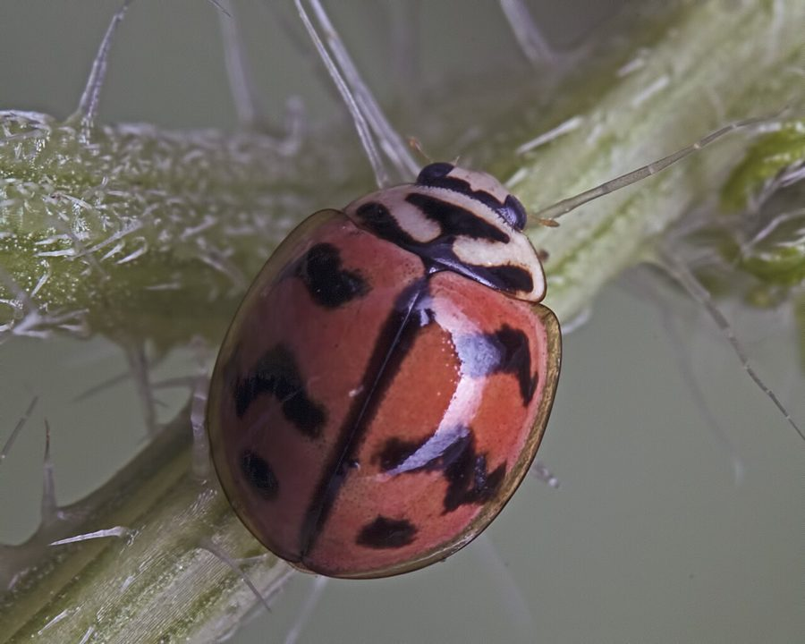

छह धब्बे वाली सोनपंखीSix-spotted Zigzag Ladybird
Cheilomenes sexmaculata · Coccinellidae · INS-0078

- Scientific nameवैज्ञानिक नाम
- Cheilomenes sexmaculata (Fabricius, 1775)
- Familyकुल
- Coccinellidae
- Hindiहिंदी
- छह धब्बे वाली सोनपंखी
- Local namesस्थानीय नाम
- sonpankhi, ladybird, chhah dhabbe wali sonpankhi, ladybird beetle
- Status hereयहाँ की स्थिति
- native
- Movementआवागमन
- Resident, here all year
- IUCNIUCN
- not evaluated
- Reviewसमीक्षा
- audited and independently read
When to look कब देखें
Present all year.साल भर मौजूद।
Uses and possibilities उपयोग और संभावनाएँ
Drawn from the documented uses in the profile below, where each is labelled traditional, current or a research lead. All uses →
Tell it apart from इनसे अलग पहचानें
छः धब्बेदार लेडीबर्ड / Six-spotted Zigzag Ladybird
Cheilomenes sexmaculata (Fabricius, 1775) — Coccinellidae
छः धब्बेदार लेडीबर्ड — पूर्वी उत्तर प्रदेश के सूती, सब्ज़ी के खेतों और बागों में पाई जाने वाली एक बहुत ही महत्वपूर्ण, छोटी निवासी शिकारी भृंग (beetle) है। इसका शरीर गुंबददार (dome-shaped) और चमकीला नारंगी-लाल होता है। इसकी सबसे बड़ी विशेषता इसके पंखों (elytra) पर पाए जाने वाले छः काले दाग़ों की ज़िग-ज़ैग पट्टी (zigzag band) है, जो इसे "छः धब्बेदार ज़िग-ज़ैग लेडीबर्ड" का नाम देती है। यह बीटल और इसके काटने वाले लार्वा दोनों ही "माहू" (aphids) जैसे हानिकारक कीटों को बड़ी संख्या में खाते हैं, जिससे यह किसानों का एक सच्चा दोस्त कीट है।
Quick Identification त्वरित पहचान
| Feature | Description |
|---|---|
| Size | Small, rounded beetle; body length 4–6 mm; width 3–4 mm |
| Colouration | Convex, shiny orange-red or brick-red wings (elytra); black head and thorax |
| Elytra Pattern | Six black spots arranged in two zigzag lines across the red elytra; spots connected by dark lines or bands forming a distinctive Z pattern |
| Thorax | Solid black with two small creamy-white spots on the front corners |
| Underside | Orange-red |
Field tip: Look on cotton, okra (bhindi), or other vegetable plants infested with tiny black or green insects (aphids, mealybugs). Watch for a small, dome-shaped orange-red beetle with distinctive zigzag black bands (not just spots) crawling actively among the pests.
Morphology आकारिकी
Biometrics (typical measurements for adult specimens in local agricultural fields):
| Measurement | Range |
|---|---|
| Body length | 4.0–6.0 mm |
| Body width | 3.0–4.0 mm |
Body details: The body is highly convex and hemispherical. The head is small and mostly retracted under the black pronotum (thorax). The pronotum is solid black with two small, oval cream or white spots at the anterior corners. The elytra (hardened forewings) are bright orange-red or reddish-yellow. The six black spots are arranged in a distinctive zigzag pattern, not isolated round spots like in the Seven-spot Ladybird. The spots are typically connected by faint dark lines, forming two continuous zigzag bands crossing the elytra.
Larval form: The larva is 4–5 mm long, dark bluish-grey or black, elongated and flat, with orange spots on the sides. It resembles a miniature alligator and has small spiny tubercles on the body.
Behaviour & Ecology व्यवहार और पारिस्थितिकी
Aggressive predator of crop pests.
- Voracious feeder: Both adults and larvae crawl actively over plants, using chemical senses to locate colonies of aphids, scale insects, and mealybugs. A single adult can consume 50–100 aphids per day; larvae are even more aggressive, consuming over 150 aphids during development.
- Flight: Capable of strong flight and can disperse between crop fields in search of pest outbreaks.
- Thermal preference: More active in warm weather; becomes sluggish in winter but remains active in protected microhabitats.
Ecological Role पारिस्थितिक भूमिका
Primary biological pest controller.
- Agricultural predator: Serves as a major natural predator of cotton aphids (Aphis gossypii), mealybugs, and scale insects, keeping pest populations below economic thresholds in cotton and vegetable crops without chemical spraying.
- Crop ally: Their presence in high numbers in Basti fields prevents aphid and mealybug outbreaks, particularly in cotton.
Life Cycle / Phenology जीवन चक्र
| Stage / Season | Event |
|---|---|
| Egg | Laid in clusters of 3–5 on the underside of leaves near pest colonies; pale yellow; hatch in 3–5 days |
| Larval stage | 4 instars; 8–12 mm long when mature; dark grey with orange spots; development 8–12 days, feeds voraciously on aphids and mealybugs |
| Pupa | Orange-yellow with dark markings; attached to leaf surface; emerges in 4–6 days |
| Adult | Emerges year-round in tropical areas; multiple generations per year; lifespan 4–6 weeks |
Host Plants or Prey आहार
Larval and Adult prey:
- Primary prey: Cotton aphids (Aphis gossypii), mealybugs (Phenacoccus species, Pseudococcus species), scale insects (Ischnaspis, Pulvinaria).
- Secondary food: Pollen and nectar when prey is scarce; occasionally feeds on eggs of small moths.
Associated crops:
- Cotton, okra (bhindi), vegetables, and flowering herbs.
Predators / Natural Enemies शत्रु
- Birds: Insectivorous birds occasionally prey on them, though deterred by their bitter taste.
- Spiders: Jumping spiders and hunting spiders.
- Parasitoid Wasps: Dinocampus coccinellae and other small wasps lay eggs inside adults, consuming them from within.
Agricultural / Human Relevance कृषि प्रासंगिकता
Cotton and vegetable crop protector.
- Chemical pesticide reduction: The preservation of this ladybird in Basti cotton and vegetable fields directly reduces the need for chemical insecticide sprays.
- Farmer education: Agricultural extension programs (Krishi Vigyan Kendra, Basti) work to educate farmers to identify this beneficial beetle and its larvae, preventing accidental spraying.
- Traditional control awareness: Traditional farmers increasingly recognize the value of preserving these predators.
Expected Locally स्थानीय रूप से अपेक्षित
Not a field record. Written from published accounts for eastern Uttar Pradesh. No confirmed local sighting yet — if you have seen it, that is what the atlas needs.
अभी तक स्थानीय पुष्टि नहीं। यह विवरण प्रकाशित स्रोतों से है, किसी अवलोकन से नहीं।
Cotton fields, okra plots, and vegetable gardens in Basti district are worth checking, particularly during the warm season (April–November). This species is to be expected during the growing season, particularly where cotton aphids or mealybugs are present. Look for small round beetles with orange-red elytra marked with distinctive zigzag black bands. Larvae are to be expected on crop plants crawling actively among pest colonies. The first local record would be a photograph with place and date; send it to the atlas contact on the About page.
Distribution वितरण
Global range: Widespread across tropical and subtropical regions of Africa, Asia, Australia, and introduced to the Pacific islands.
In India: Found throughout agricultural regions, particularly in cotton and vegetable growing areas.
In Uttar Pradesh: Abundant resident in all cotton and vegetable-growing districts.
In Basti district / eastern UP: Found in all agricultural blocks where cotton and vegetable crops are grown, particularly in warm months.
Research Questions शोध प्रश्न
Anyone can investigate these | कोई भी इन प्रश्नों की जाँच कर सकता है
- How many cotton aphids does a single six-spotted ladybird larva consume during its entire developmental period in Basti? — Recreate a test container with measured aphid food supply and count consumption.
- What is the ratio of six-spotted to transverse ladybirds in Basti cotton fields? — Conduct field surveys comparing abundance of both species.
- Does the application of neem oil sprays affect six-spotted ladybird survival compared to chemical insecticides? — Test survival rates on treated cotton plants.
- How far do adult six-spotted ladybirds disperse from their emergence site in search of prey? / क्या छः धब्बेदार लेडीबर्ड शिकार की तलाश में कितनी दूरी तक जाती है? — Mark and recapture individuals in cotton fields.
- Are there local parasitoids of six-spotted ladybird pupae in Basti, and how do they affect ladybird populations? — Collect pupae and rear them to identify parasitoids.
Similar Species मिलती-जुलती प्रजातियाँ
| Species | Key Difference | हिंदी | |
|---|---|---|---|
| Seven-spot Ladybird (Coccinella septempunctata) | Has seven distinct, round black spots (not zigzag bands); slightly larger | सात-बिंदु लेडीबर्ड — सात गोल दाग़े, बड़ा | |
| [[transverse_ladybird\ | Transverse Ladybird]] (Coccinella transversalis) | Three pairs of wavy transverse bands (not six distinct spots); larger | ट्रांसवर्स लेडीबर्ड — पट्टियाँ, बड़ा |
| Mealybug Destroyer (Cryptolaemus montrouzieri) | Dark brown or black coloration; different spot pattern; smaller | माहू भक्षक — गहरा भूरा |
Field rule: A small, dome-shaped orange-red beetle with six black spots arranged in distinctive zigzag lines (not round spots) and small white corner spots on the thorax identifies the Six-spotted Zigzag Ladybird.
Taxonomy & Classification वर्गीकरण
Original description. Fabricius described the Six-spotted Ladybird as Coccinella sexmaculata in 1775 in his Systema Antliatorum. The species was later moved to the genus Cheilomenes, which includes several related African and Asian ladybird species.
Subspecies. The nominate subspecies C. s. sexmaculata is the one found in Asia and India.
Family and order placement. Order Coleoptera, family Coccinellidae (ladybird beetles).
Phylogenetic notes. Cheilomenes is closely related to Coccinella, sharing similar predatory behaviors and chemical defenses. The genus is distributed primarily across tropical regions.
IUCN status rationale. Not evaluated (NE) by the IUCN Red List. It is a highly common agricultural generalist with no conservation threats.
Photo Gallery फोटो गैलरी
No photos yet — add field photos to media/species/six_spotted_ladybird/ and run node scripts/sync_photos.js.
Photos needed आवश्यक फोटो
- [ ] Adult on cotton leaf (कपास की पत्ती पर)
- [ ] Adult from above showing six spots (ऊपर से)
- [ ] Larva on aphid colony (कीड़ों पर)
References संदर्भ
- Fabricius, J.C. (1775). Systema Antliatorum. Flensburgi et Lipsiae. [original description]
- Omkar & Pervez, A. (2004). Ecology of coccinellid predators: a review. International Journal of Tropical Insect Science 24(2): 117–126.
- Poorani, J. (2002). An annotated checklist of the Coccinellidae (Coleoptera) of the Indian Subcontinent. Oriental Insects 36(1): 307–383.
- Mani, M.S. (1968). General Entomology. Oxford & IBH Publishing Co., New Delhi.
- ZSI Checklist — Coccinellidae of Uttar Pradesh (2015).
- GBIF Occurrence Data — Cheilomenes sexmaculata, Uttar Pradesh (2010–2025).
Source file: species/fauna/insects/six_spotted_ladybird.md